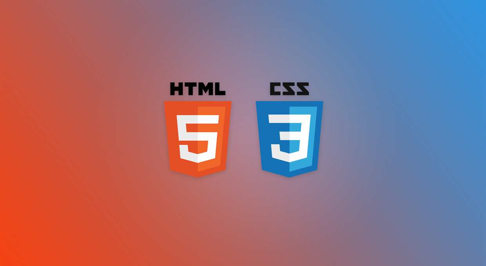
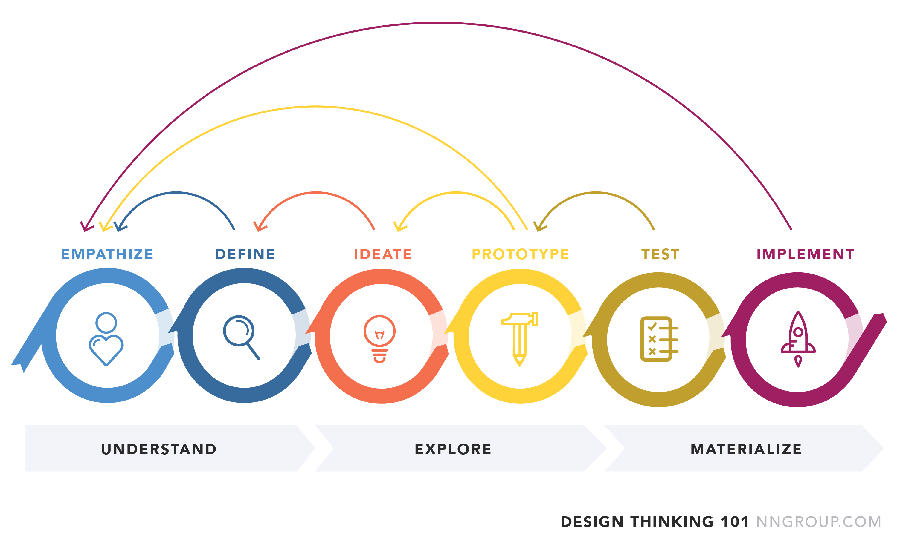

Projekter

Her skal der komme relevant tekst og billeder med underoverskrifter
HTML og CSS workshop
Vi blev stillet en opgave der skulle løses to og to. Opgaven var at vi skulle researche et specifikt emne inden for HTML og CSS. Her skulle jeg i samarbejde med Tobias skrive om hvad CSS skriftformatering og dekoration er, her fik vi udarbejdet en side, hvor vi kom ind på de forskellige ting man kunne dekorere ens hjemmeside med, af teksttyper og dekorationsformer.
Design Thinking app
I dette projekt har vi arbejdet med en generel metodisk tilgang indenfor multimedieproduktion. Vi blev delt op i grupper af 3, hvor vi kom ind på 6 faser der skulle hjælpe os igennem Design Thinking Projektet.
Emperthize (dyb forståelse)
Her skulle vi være nysgerrig på problemstillingen, og indsamle viden fra mange forskellige kilder og prøve på at skabe et overblik over vores informationer. Og vi skulle organisere vores viden visuelt, ved at lave en whiteboard tavle eller væg, hvor vi kunne hænge tekst eller billeder op på.
Definer problemet
Her skal det overblik vi fik skabt os i empathize fasen være med til at definere de problemstillinger som var mest relevans for os. Vi kunne godt rende ind i flere forskellige problemstillinger som havde en relevans for os.
Ideate-ideudvikling
Her måtte vi begynde at ideudvikle, dog skulle vi være opmærksomme på at denne fase ikke kun handlede om at gå med den første ide vi kom i tanke om, men vi skulle forsøge os med nytænkning og komme på originale ideer. Når vi havde vores ide, skulle vi lave et Journey Map som skulle præsenteres via en video.
Prototype
Her skulle vi få vores ide kreeret til en prototype. Denne prototype skulle være i papirform, så det skulle være i en fysisk form og derfor skulle der ikke kodes, men klippe klistres.
Test
Dette var en af de faser hvor min gruppe godt kunne havde taget tingene lidt mere seriøst, vores brugertest fase var ikke den bedste, og dermed mistede vi lidt viden i denne fase. Dog skulle vi have testet vores app på nogle brugere, så vi kunne få ris og ros for vores app og den problemløsning vi havde udarbejdet.
Implementering
I denne fase skulle vi aflevere 3 videoer, en kort opsamling af hvordan vi greb hele processen an med ideation og vores prototype. Derefter skulle vi lave en kort pitch af vores projekt. Og til sidst skulle vi lave en grundig gennemgang af vores resultat.
Vi valgte at gå med camping, og vi lavede en app som var en events app. Her kunne man som brugere, vælge hvilket events, i vores tilfælde intimkoncerter, man gerne ville til. Når man havde valgt, hvilken koncert og hvor henne denne koncert foregik man ville til, kunne man vælge hvilken campingplads man ville ligge på. Der var underpunkter over ordensregler, tips og tricks og feedback fra andre brugere, der havde været afsted til andre events
OnePage
Vi fik til opgave at lave en Onepage to og to, jeg kom i gruppe med Morten. Vi trak alle sammen nogle forskellige ganske almindelige hverdagsprodukter, som vi skulle arbejde med, og vi trak Chili marinerede hvidløg fra Gestus.
Onepage 5 faser
Projektetablering
Her snakkede vi om vores forventningsafstemning til projektet, aftaler om hvordan vi vil arbejde sammen og lægge en plan over hvordan tingene skulle foregår i samarbejdet. Vi skulle også skabe os en base, hvor vi kunne hænge ting op på væggene og virkeligt indrette os til at vi skulle kunne arbejde med dette projekt i 3 uger.
Research
I denne fase skulle vi være nysgerrige, og finde frem til en relevant problemstilling, som vi kunne arbejde med. Det var også her vi skulle bruge vores research til at fastlægge de mål vi havde for vores design. Vi skulle gennemfører en empathize fase og være nysgerrige.
Design
Her skulle vi udvikle en ide og skitsere wireframes. Vi skulle også lave moodboard og style tiles. Med de forskellige ting, skulle vi teste vores ide, dette skulle dokumenteres med en video.
Produktion
Her skulle vi begynde at kode vores Onepage, og skrive vores indhold til sitet. Under denne proces skulle vi committe hvor dag til Github, under det repository vi havde lavet til dette projekt. Når vi var færdig med kodningen og havde lavet siden som vi gerne ville have den, også så den var responsiv i 3 design, nemlig mobile, tablet og desktop, skulle vi brugerteste den.
Aflevering og Præsentation
Til sidst skulle vi præsentere vores projekt overfor de andre, og vi skulle give feedback til en af de andre grupper. Under præsentationen, skulle vi komme ind på vores resultater af researchfasen, hvad siden skulle kunne, designfasen, vores moodboard og wireframes, og vores produktionsfase, hvor vi skulle præsentere projektet i dens helhed.